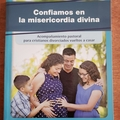

Desafío de ser Joven disponible ya
El desafío de ser Joven ya está disponible para la membresía

Ya está disponible el libro "El desafío de ser jóvenes" - formación en el amor. Con un costo de $70 disponible a través de pedidos diocesanos.
